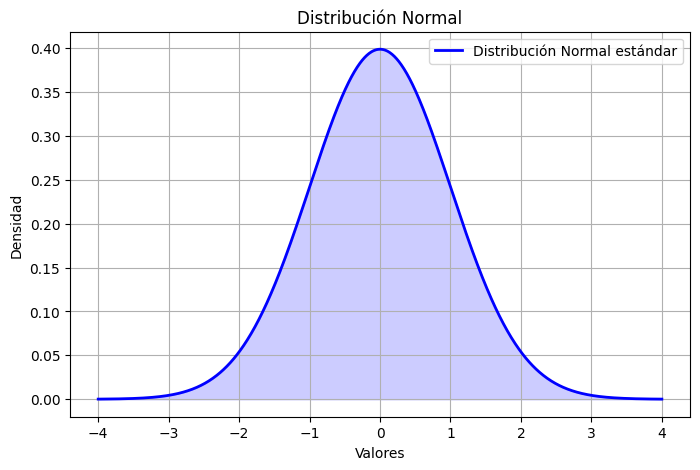
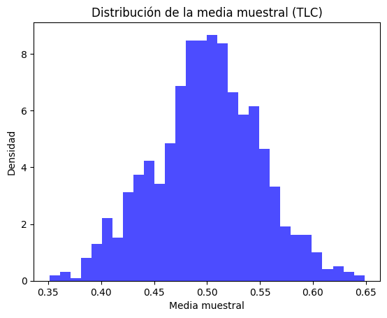

Introducción a la Inferencia Estadística#
Objetivos de la Clase#
En esta sesión, exploraremos los fundamentos de la inferencia estadística, comprendiendo su importancia y aplicaciones en el análisis de datos. Al finalizar esta clase, serás capaz de:
Diferenciar entre estadística descriptiva e inferencial.
Entender el papel de las distribuciones de probabilidad en la inferencia.
Aplicar conceptos clave como el Teorema del Límite Central.
¿Qué es la Inferencia Estadística?#
La inferencia estadística es el proceso de extraer conclusiones sobre una población a partir de una muestra de datos. Se basa en la teoría de la probabilidad y utiliza herramientas como estimación y pruebas de hipótesis.
Importancia de la Inferencia Estadística
Permite tomar decisiones fundamentadas con datos incompletos, siendo clave en disciplinas como economía, biomedicina y aprendizaje automático.
Diferencia entre Estadística Descriptiva e Inferencial#
Estadística Descriptiva |
Estadística Inferencial |
|---|---|
Resume y organiza datos. |
Generaliza resultados a una población. |
Usa medidas como media y desviación estándar. |
Usa técnicas como intervalos de confianza y pruebas de hipótesis. |
No permite hacer predicciones. |
Se basa en modelos probabilísticos para realizar inferencias. |
Distribuciones de Probabilidad en Inferencia#
Antes de profundizar en la inferencia, es fundamental entender las distribuciones de probabilidad más utilizadas:
Distribución Binomial#
Modela el número de éxitos en una serie de ensayos independientes.
Se define por los parámetros \(n\) (número de ensayos) y \(p\) (probabilidad de éxito en cada ensayo).
Ejemplo: Número de veces que un cliente compra en una tienda durante 10 visitas.
Distribución Normal#
Es continua y simétrica, modela fenómenos naturales y errores de medición.
Se define por su media \(\mu\) y desviación estándar \(\sigma\).
El Teorema del Límite Central explica por qué la normal es crucial en la inferencia.
import numpy as np
import matplotlib.pyplot as plt
from scipy.stats import norm
x = np.linspace(-4, 4, 1000)
y = norm.pdf(x, loc=0, scale=1)
plt.figure(figsize=(8, 5))
plt.plot(x, y, color='blue', lw=2, label='Distribución Normal estándar')
plt.fill_between(x, y, alpha=0.2, color='blue')
plt.title('Distribución Normal')
plt.xlabel('Valores')
plt.ylabel('Densidad')
plt.legend()
plt.grid()
plt.show()

El Teorema del Límite Central#
El Teorema del Límite Central (TLC) establece que, para muestras grandes, la distribución de la media muestral se aproxima a una distribución normal, independientemente de la distribución original de los datos.
Importancia del TLC
Permite justificar el uso de métodos inferenciales basados en la normalidad, incluso cuando los datos originales no son normales.
Ejemplo en Python:
import numpy as np
import matplotlib.pyplot as plt
# Simulación del TLC con una distribución uniforme
np.random.seed(42)
muestras = [np.mean(np.random.uniform(0, 1, 30)) for _ in range(1000)]
plt.hist(muestras, bins=30, density=True, alpha=0.7, color='blue')
plt.title('Distribución de la media muestral (TLC)')
plt.xlabel('Media muestral')
plt.ylabel('Densidad')
plt.show()

Conclusión y Próximos Pasos#
En esta clase, revisamos los conceptos fundamentales de la inferencia estadística y la importancia de las distribuciones de probabilidad en el análisis de datos. En la próxima sesión, exploraremos en detalle las distribuciones muestrales y su papel en la estimación y pruebas de hipótesis.
Tarea
Reflexiona sobre la importancia del TLC en problemas reales. ¿Cómo crees que se aplica en modelos de predicción?